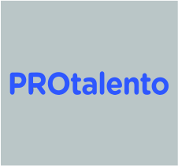
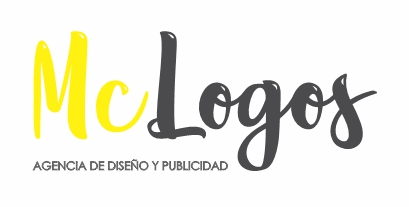

Datos Personales
santiago.forero.olarte@hotmail.com
www.linkedin.com/in/santiago-forero-olarte-30306387
https://github.com/Safool17
Formacion Academica

Desarrollo Web Full Stack
Protalento
Economía
Escuela De Administración De Negocios Ean
Gestión Bancaria y de Entidades Financieras
Servicio Nacional De Aprendizaje SENA
Otros Cursos
Análisis de Datos de Google
Coursera - Google
Ingles Intensivo
Protalento
Excel avanzado
Corporación De Educación Tecnológica Colsubsidio - Airbus Group
Excel intermedio
Institución Universitaria Esumer
Habilidades
Resolución de problemas.
Puntualidad, orden y disciplina.
Integridad y confidencialidad.
Pensamiento analítico.
Trabajar con base en objetivos y resultados.
Perfil
Estudiante de Economía, con tecnólogo en Gestión Bancaria y de
Entidades Financieras, con mas de cuatro años de experiencia como
auxiliar administrativo, con orientación en la planificación
estratégica de recursos humanos, elaborando proyectos para los
departamentos de la organización; habilidades en asesoría al cliente
interno y externo.
Conocimiento en archivar, planificar y coordinar eventos, así como
redactar y consolidar informes según lineamientos de cada área,
ejecutar el registro y administración de los recursos humanos,
materiales y presupuestarios.
Manejo de las herramientas informáticas como Microsoft Office y Corel,
para la presentación y manejo de informaciónclara y efectiva.
Experiencia laboral

Auxiliar administrativo de Recursos Humanos
Mclogos S.A.S
Mayo de 2022 - Enero de 2023
Administración de los recurso operativos, coordinación de despachos.
Control y ejecución de pagos empresariales y nomina. Control y manejo
de la contabilidad del negocio. Atención y venta a los clientes
corporativos.
Revisor de procesos
THOMAS GREG & SONS S.A.
Febrero de 2022 – Mayo de 2022
Liderar equipo de trabajo para optimizar tiempo de producción. Control
de novedades del personal y reporte a gestión humana. Seguimiento al
cumplimiento del contrato empresarial.
Auxiliar de aduanas
ADUANEROS E&F S.A.S
Julio de 2021 – febrero de 2022
Controlar la ejecución de la operación, el reporte de eventos y
novedades para la prestación del servicio portuario de acuerdo con los
procedimientos y los requisitos establecidos. Seguimiento y
cumplimiento de los planes del área contable y recursos humanos.
Auxiliar Administrativo Calidad de vida
BANCOLOMBIA S.A
Octubre de 2017 – noviembre de 2020
Encargado del manejo y logística de eventos, ingreso de información a
los aplicativos del cumplimiento, divulgación y asesoramiento a los
empleados sobre salud, calidad de vida y productividad, manejo de
plataforma de convenios o alianzas comerciales. Elaboración de
proyectos para los departamentos de la organización.
Informador de Servicios
BANCOLOMBIA S.A
Marzo de 2016 – septiembre de 2017
Encargado del manejo y dirección de los clientes a los canales
alternos, asesoramiento en productos y servicios, seguimiento al
proceso de entrega de turnos.
Aprendiz Sección Novedades Gestión de lo Humano
BANCOLOMBIA S.A
Abril de 2014 – enero de 2016
Encargado del manejo de contratación, ingreso de información a los
aplicativos, liquidación de empleados, atención al cliente interno.